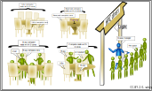

Submitting Jobs¶
The scheduler¶
HPC systems are usually composed out of large number of nodes and have large number of users simultaneously using the facility. How do we ensure that the available resources are managed properly? This is a job of the scheduler, which is a heart and soul of the system and it's resposible for managing the jobs that are run on the cluster.
As an analogy, think of the scheduler as a waiter in busy restaurant. This hopefully will give you some idea why sometimes you have to wait for the job to run.

CREATE is using SLURM scheduler, which stands for Simple Linux Utility for Resource Management. SLURM is commonly used by other HPC systems as well. You may also encounter other job schedulers such as PBS. These work on similar principles, although the exact commands and terminology will be different.
Partitions¶
You can think of partitions as queues - they reside over specific sets of resources and allow access to particular groups. Following the restaurant analogy, think of them as different sections of the restaurant and corresponding queues assigned to them.
The public partitions available on CREATE HPC are:
cpu: Partition for cpu jobsgpu: Partition for gpu jobslong_cpuandlong_gpu: Partitions for long running jobs. Requires justification and explicit permission to useinterruptible_cpuandinterruptible_gpu: Partitions that use unused capacity on private servers
In addition, specific groups/faculties have their own partitions on CREATE HPC that can only be used by members of those groups. The list of CREATE partitions and who can use them can be found in our documentation. Additional information about the resource constraints can be found here.
You can get the list of partitions that are available to you via sinfo --summarize command:
k1234567@erc-hpc-login1:~$ sinfo --summarize
PARTITION AVAIL TIMELIMIT NODES(A/I/O/T) NODELIST
cpu* up 2-00:00:00 35/0/0/35 erc-hpc-comp[001-028,183-189]
gpu up 2-00:00:00 13/6/0/19 erc-hpc-comp[030-040],erc-hpc-vm[011-018]
interruptible_cpu up 1-00:00:00 20/65/0/85 erc-hpc-comp[041-047,058-109,128-133,135,137,139-151,153-154,157,179-180]
interruptible_gpu up 1-00:00:00 24/17/2/43 erc-hpc-comp[048-057,110-127,134,170-178,190-194]
Any additional rows you see in the output of sinfo will be private partitions you have access to.
Hint
NODES(A/I/O/T) column refers to nodes state in the form allocated/idle/other/total.
Submitting jobs¶
In most cases you will be submitting non-interactive jobs, commonly referred to as batch jobs. For this you will be
using the sbatch utility.
To submit a job to the queue, we need to write a shell script which contains the commands we want to run. When the scheduler picks our job from the queue, it will run this script. There's several ways we could create this script on the cluster, but for short scripts it's often easiest to use a command line text editor to create it directly on the cluster. For more complex scripts you might prefer to write them on your computer and transfer them across, but it's relatively rare that job submission scripts get that complex.
One common text editor that you should always have access to on systems like CREATE is nano:
nano test_job.sh
Nano is relatively similar to a basic graphical text editor like Notepad on Windows - you have a cursor (controlled by the arrow keys) and text is entered as you type.
Once we're done, we can use Ctrl + O to save the file - at this point if we haven't already told Nano the filename it will ask for one.
Then finally, Ctrl + X to exit back to the command line.
If we ever forget these shortcuts, Nano has a helpful reminder bar at the bottom.
If you find yourself doing a lot of text editing on the cluster, it may be worth learning to use a more advanced text editor like Vim or Emacs, but Nano is enough for most people.
We are going to start with a simple shell script test_job.sh that will contain the commands to be run during the job execution:
#!/bin/bash -l
echo "Hello World! "`hostname`
sleep 60
From the login node, submit the job to the scheduler using:
sbatch --partition cpu --reservation cpu_introduction test_job.sh
We are specifying the partition to use (cpu), and also the reservation (cpu_introduction).
We have set up a reservation for this workshop to ensure we don't have to wait too long to be allocated resources.
Outside of an organised workshop, you likely won't have a reservation.
On CREATE HPC, we can also often get test jobs like these to run more quickly by using the interruptible_cpu queue.
The interruptible queues make use of otherwise unused space on private nodes, but if the owner of the nodes wants to use them, your running jobs may be cancelled.
It's useful for quick testing, but if you're going to use the interruptible queues for real jobs you need to make sure they can be safely cancelled and not lose progress - this is often done via checkpointing.
Once the command is executed you should see something similar to:
k1234567@@erc-hpc-login1:~$ sbatch --partition cpu --reservation cpu_introduction test_job.sh
Submitted batch job 56543
Info
If you do not define a partition during the job submission the default partition will be used, in this case cpu.
The job id (56543) is a unique identifier assigned to your job and can be used to query the status of the job. We will go through it
in the job monitoring section.
Important
When submitting a support request please provide relevant jobids of the failed, or problematic jobs.
Interactive jobs¶
Sometimes you might need, or want to run things interactively, rather than submitting them as batch jobs.
This could be because you want to debug or test something, or the application/pipeline does not support
non-interactive execution. To request an interactive job via the scheduler use the srun utility:
srun --partition cpu --reservation cpu_introduction --pty /bin/bash -l
The request will go through the scheduler and if resources are available you will be placed on a compute node, i.e.
k1234567@erc-hpc-login1:~$ srun --partition cpu --reservation cpu_introduction --pty /bin/bash -l
srun: job 56544 queued and waiting for resources
srun: job 56544 has been allocated resources
k1234567@erc-hpc-comp001:~$
To exit an interactive job, we use the Bash command exit - this exits the current shell, so if you're inside an interactive job it will exit that, if you're just logged in to one of the login nodes, it will disconnect your SSH session.
Warning
At the moment there are no dedicated partitions, or nodes for interactive sessions and those sessions share the resources with all of the other jobs. If there are no free resources available you request will fail.
Running applications with Graphical User Interfaces (GUIs)
To run an interactive job for an application with a Graphical User Interface (GUI), for example RStudio, you must enable 'X11 forwarding' and 'authentication agent forwarding' when you connect to CREATE:
ssh -XA hpc.create.kcl.ac.uk
Then request compute resources using salloc - once your resources have been allocated you can then connect to the node with a further ssh connection:
salloc <parameters>
ssh -X $SLURM_NODELIST
xeyes
Job monitoring¶
It is important to be able to see the status of your running jobs, or to find out information about completed, or failed jobs.
To monitor the status of the running jobs use squeue utility.
Without any arguments, the command will print queue information for all users, however you can use --me parameter
to filter the list:
k1234567@erc-hpc-login1:~$ squeue --me
JOBID PARTITION NAME USER ST TIME NODES NODELIST(REASON)
56544 cpu bash k1234567 R 6:41 1 erc-hpc-comp001
Info
Job state is described in the ST column. For the full list of states please see squeue
docs (JOB STATE CODES section).
The most common codes that you might see are:
PD: Pending - Job is awaiting resource allocation.R: Running - Job currently has an allocation.CG: Completing - Job is in the process of completing. Some processes on some nodes may still be active.CD: Completed - Job has terminated all processes on all nodes with an exit code of zero.
For jobs that have finished, you can use sacct utility to extract the relevant information.
sacct -j 56543
JobID JobName Partition Account AllocCPUS State ExitCode
------------ ---------- ---------- ---------- ---------- ---------- --------
56543 test_job.+ cpu kcl 1 COMPLETED 0:0
56543.batch batch kcl 1 COMPLETED 0:0
The above shows the default information.
You can use --long option to display all of the stored information, or alternatively
you can customise your queries to display the information that you specifically looking for by using --format parameter:
sacct -j 13378473 --format=ReqMem,AllocNodes,AllocCPUS,NodeList,JobID,Elapsed,State
ReqMem AllocNodes AllocCPUS NodeList JobID Elapsed State
---------- ---------- ---------- --------------- ------------ ---------- ----------
1000Mc 1 1 noded19 13378473 00:00:01 COMPLETED
1000Mc 1 1 noded19 13378473.ba+ 00:00:01 COMPLETED
For the list of available options please see the job accounting fields in the sacct documentation.
Check how efficiently your job used its resources
sacct can be used to check how efficiently your job used the resources you requested.
For example, you can use the option --format=JobID,JobName,Timelimit,Elapsed,CPUTime,ReqCPUS,NCPUS,ReqMem,MaxRSS
to get information on the maximum memory usage, total elapsed time, and CPU time used by your job.
k1234567@erc-hpc-login1:~$ sacct -j 8328 --format=JobID,JobName,Timelimit,Elapsed,CPUTime,ReqCPUS,NCPUS,ReqMem,MaxRSS
JobID JobName Timelimit Elapsed CPUTime ReqCPUS NCPUS ReqMem MaxRSS
------------ ---------- ---------- ---------- ---------- -------- ---------- ---------- ----------
8328 hellowor 00:02:00 00:00:07 00:00:28 4 4 2G
8328.ba+ batch 00:00:07 00:00:28 4 4 325772K
The example job above requested 2GB of memory but only used about 0.33 GB, and requested up to 2 minutes but only took 7 seconds.
You should look at resource usage of your jobs and use this to guide the resources you request for similar jobs in the future. Jobs that request lower resources will likely be scheduled faster. Requesting only the resources you need also ensures that the HPC resources are used efficiently. Requesting more CPUs or memory than you need can stop other people's jobs running and lead to significant HPC resources sitting idle.
Cancelling jobs¶
You can cancel running, or queued job using scancel utility. You can cancel
specific jobs using their jobid
k1234567@erc-hpc-login1:~$ scancel 56544
If you want to cancel all of your jobs you can add the --user option
k1234567@erc-hpc-login1:~$ scancel --user k1234567
Choosing the resources¶
Jobs require resources to be defined, e.g. number of nodes, cpus, amount of memory or the runtime. Defaults, such as 1 day runtime, 1 core, 1 node, etc are provided for convenience, but in most cases they will not be sufficient to accomodate more intensive jobs and explicit request has to be made for more.
Warning
If you do not request enough resources and your job exceeds the allocated amount, it will be terminated by the scheduler.
The resources can be requested by passing additional options to the sbatch and srun commands. In most cases
you will be using the following parameters to define the resources for your job:
- partition:
--partition, or-pdefines which partition, or queue your job will be targeting - memory:
--memdefines how much memory your job needs per allocated node - tasks:
--ntasks, or-ndefines how many tasks your job needs - nodes:
--nodes, or-ndefines how many nodes your job requires - cpus per task:
--cpus-per-task, defines how many cpus per task are needed - runtime:
--time, or-tdefines how much time your job needs to run (in theD-HH:MMformat) - reservation:
--reservationasks the scheduler to allocate your job to some pre-existing reserved space
For a full list of options please see sbatch documentation.
You can provide those options as arguments to the sbatch, or srun commands, i.e.
sbatch --job-name test_job --partition cpu --reservation cpu_introduction --ntasks 1 --mem 1G --time 0-0:2 test_job.sh
however that can be time consuming and prone to errors. Luckily you can also define those resource requirements
in your submission scripts using #SBATCH tags. The sample job from the previous section
will look like:
#!/bin/bash -l
#SBATCH --job-name=hello-world
#SBATCH --partition=cpu
#SBATCH --reservation=cpu_introduction
#SBATCH --ntasks=1
#SBATCH --mem=1G
#SBATCH -t 0-0:2 # time (D-HH:MM)
echo "Hello World! "`hostname`
sleep 60
Info
In bash, and other shell scripting languages # is a special character usually representing comment
(#! is an exception used to define the interpreter that the script will be executed with) and is ignored during the execution.
For information on special characters in bash please see here.
Hint
You can specify SLURM options using two slightly different formats:
1. --partition cpu
1. --partition=cpu
Here we have have used the first version on the command line and the second inside the submission script,
but this isn't necessary.
Either format can be used in either context.
#SBATCH is a special tag that will be interpreted by SLURM (other schedulers utilise similar mechanism) when the job is submitted.
When the script is run outside the scheduler it will be ignored (becuse of the # comment).
This is quite useful, as it means the script can be executed outside the scheduler control and will run successfully.
Hint
When requesting resources try to request them close to what your job needs, rather than requesting the maximum. Think back to the restaurant analogy - it's easier to find a table for a group of two people than a group of eight, so your job will likely be scheduled sooner. This also ensures that the HPC resources are being used efficiently.
Using GPUs¶
GPUs are becoming increasingly widely used in research software applications, especially for machine learning and AI approaches.
GPUs are very good at certain types of calculations, and can have >10k cores each so can run many of these calculations in parallel. However, GPUs are not the best option for all tasks. GPUs are very bad at things that aren't these types of calculations, and typically have much smaller memory. In addition, GPU programming can be complex.
You can request GPUs using the --gres option to SLURM.
In the submission script below, --gres gpu:1 requests one GPU.
On CREATE HPC, you also need to use the gpu or interruptible_gpu partition.
The nvidia-smi command prints some information about the GPUs allocated to the job.
Hint
You can request X gpus (up to 4) using --gres gpu:X
#SBATCH --job-name=gpu-job
#SBATCH --partition=interruptible_gpu
#SBATCH --ntasks=1
#SBATCH --cpus-per-task=1
#SBATCH --mem=4G
#SBATCH -t 0-0:02 # time (D-HH:MM)
#SBATCH --gres gpu:1
nvidia-smi --id=$CUDA_VISIBLE_DEVICES
Submit this job using:
sbatch test_gpu.sh
A sample output would be:
+-----------------------------------------------------------------------------+
| NVIDIA-SMI 470.182.03 Driver Version: 470.182.03 CUDA Version: 11.4 |
|-------------------------------+----------------------+----------------------+
| GPU Name Persistence-M| Bus-Id Disp.A | Volatile Uncorr. ECC |
| Fan Temp Perf Pwr:Usage/Cap| Memory-Usage | GPU-Util Compute M. |
| | | MIG M. |
|===============================+======================+======================|
| 0 Tesla K40c On | 00000000:08:00.0 Off | 0 |
| 23% 32C P8 23W / 235W | 0MiB / 11441MiB | 0% Default |
| | | N/A |
+-------------------------------+----------------------+----------------------+
+-----------------------------------------------------------------------------+
| Processes: |
| GPU GI CI PID Type Process name GPU Memory |
| ID ID Usage |
|=============================================================================|
| No running processes found |
+-----------------------------------------------------------------------------+
Advanced resource requirements
In some situations you might want to request specific hardware, such as chipset or fast network interconects.
This can be achived with the use of --constrain option.
To request a specific type of GPU a100 you would use
#SBATCH --constrain=a100
or to request a specific type of processor/architecture you would use
#SBATCH --constrain=haswell
Job log files¶
By default the log files will be placed in the directory you have made your submission from (i.e. current working directory) in the format of slurm-jobid.out.
Both stdout and stderr streams will be redirected from the job to that file.
These log files are important as they will give you clues about the execution of your application in particular why it has failed.
You can modify this to suit your needs by explicitly defining different path
#SBATCH --output=/scratch/users/%u/%j.out
You can also separate the stdout and stderr into separate log files
#SBATCH --output=/scratch/users/%u/%j.out
#SBATCH --error=/scratch/users/%u/%j.err
Info
%u and %j are replacement symbols (representing username and job id) that will be replaced with actual values once the job is submitted.
Please see file patterns section for details.
A more realistic example¶
Let's work through a more realistic example.
Here's a Python script which takes a text file as input and identifies the most common words in the file. The text is split into tokens, and punctuation and the most common English words are removed. The script then generates a wordcloud of the most common words, and saves it to a .png file. Finally, the top N words are output in a text file.
import nltk
import wordcloud
import pandas as pd
import os
import sys
nltk.download('punkt_tab')
nltk.download('stopwords')
from nltk.corpus import stopwords
from string import punctuation
# process command line arguments
file_name = sys.argv[1]
top_N = int(sys.argv[2])
file_base, ext = os.path.splitext(os.path.basename(file_name))
# read in text
with open(file_name, encoding='utf-8-sig') as f:
txt = f.read().lower()
# split text into tokens
tokens = nltk.word_tokenize(txt)
# remove punctuation and common words
punct = punctuation + "“" + "”" + "’"
english_stop_words = set(stopwords.words('english'))
tokens = [word for word in tokens if
word not in english_stop_words and
word not in punct]
# create wordcloud and save to file
wc = wordcloud.WordCloud()
wc.generate(",".join(tokens))
wc.to_file(file_base + '-wordcloud.png')
# write csv file of top N tokens
token_distribution = nltk.FreqDist(tokens)
top_tokens = pd.DataFrame(token_distribution.most_common(top_N),
columns=['Word', 'Frequency'])
top_tokens.to_csv(file_base + '-top.csv')
The script can be run as follows, specifying the input text file and the number of top words to return:
python top_words.py paradise-lost.txt 20
To run this script, we need to first install the Python packages it uses. Let's create a new Python virtual environment to install them.
module load python/3.11.6-gcc-13.2.0
python -m venv top_words_env
The packages we need to install are:
nltk, for natural language processing;
wordcloud, to create the wordcloud;
and pandas, to create the table of most common words and their frequencies.
source top_words_env/bin/activate
pip install nltk pandas wordcloud
In the submission script for this job, we need to load the python module and activate the virtual environment.
We then run the script, specifying the input text file and number of top words to return.
#! /bin/bash -l
#SBATCH --job-name=top_words
#SBATCH --partition=cpu
#SBATCH --reservation=cpu_introduction
#SBATCH --ntasks=1
#SBATCH --cpus-per-task=1
#SBATCH --mem=2G
#SBATCH -t 0-0:10 # time (D-HH:MM)
module load python/3.11.6-gcc-13.2.0
source top_words_env/bin/activate
python /datasets/hpc_training/DH-RSE/scripts/top_words.py /datasets/hpc_training/DH-RSE/data/paradise-lost.txt 20
Submit the job using:
sbatch submit_top_words.sh
Once it finishes, examine the output using cat or less to look at the contents of paradise-lost-top.csv.
Exercises - submitting jobs¶
Work through the exercises in this section to practice submitting and debugging jobs.